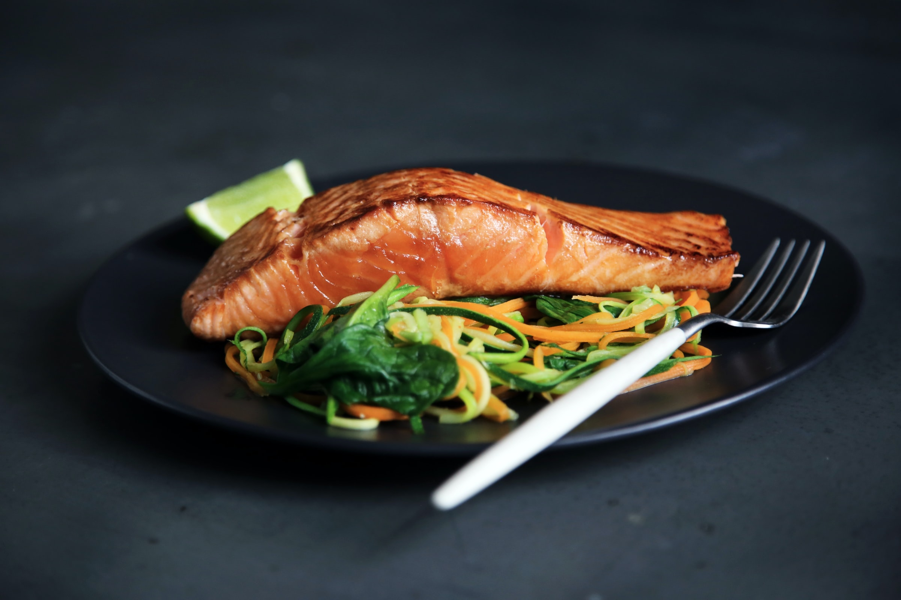

Welcome to Pines of Nowhere
Rich in Eastern Shore hospitality, Pines of Nowhere welcome guests into a warm modern setting located off the lobby of The Inn at the Pines of Nowhere. Offering indoor and outdoor dining, we feature 150 seats with booth and table style seating, two fireplaces, and two bars overlooking the sandy beaches. It is designed to create an authentic experience for locals and guests with a menu focusing on local farmers and watermen and regionally inspired cuisine. Seasonal dishes feature the area’s finest ingredients alongside signature cocktails and an extensive beer and whiskey selection.
The Pines of Nowhere provides the perfect setting to enjoy the freshest seafood sourced from local farms and waters. Our knowledgeable staff will delight you with exceptional service & guiding you through the wide variety of items on our menu and helping you select the perfect wine to complement your meal. Each menu is heavily chef driven and allows our culinary team to create unique and innovative dishes that fit their market.